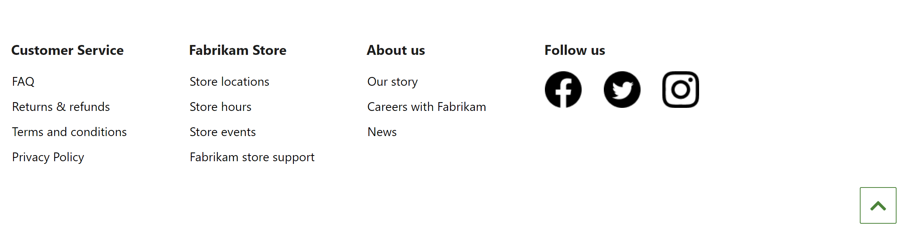

Fußzeilenmodul
Important
Dynamics 365 Retail ist jetzt Dynamics 365 Commerce und bietet umfassende Handelsfunktionen für alle Kanäle – von E-Commerce über Shops bis hin zu Callcentern. Weitere Informationen zu diesen Änderungen finden Sie unter Microsoft Dynamics 365 Commerce.
In diesem Thema werden Fußzeilenmodule behandelt und deren Erstellung in Microsoft Dynamics 365 Commerce beschrieben.
Übersicht
Das Fußzeilenmodul ist ein spezielle Container, der verwendet wird, um die Module zu hosten, die in der Fußzeile erscheinen. Zum Beispiel kann es Verknüpfungen an verschiedene Seiten auf der Site umfassen wie Kontaktieren Sie uns und Speichern Sie Richtlinien.
Das folgende Bild zeigt ein Beispiel eines Fußzeilenmoduls, das auf einer Homepage verwendet wird.

Fußzeilenmoduleigenschaften
Wie die meisten Container unterstützt ein Fußzeilenmodul die Eigenschaften für die Überschrift und die Breite. Es unterstützt außerdem das Hinzufügen mehrerer Fußzeilenkategoriemodulen. Jedes Fußzeilenkategoriemodul, das hinzugefügt wird, wird als Spalte im Fußzeilenmodul dargestellt.
Module, di in einem Fußzeilenmodul verfügbar sind
Fußzeilenartikel – Ein Fußzeilenartikelmodul kann eine Überschrift, ein Bild und einen Link enthalten. Die Überschrift kann entweder alleine oder mit einem Bild und einem Link zusammen verwendet werden. Jeder Link in der Fußzeile kann so konfiguriert werden, damit nur Text (z.B. „kontaktieren Sie uns“ und „Datenschutz“ Links) enthalten ist oder Text und ein Bild hat (beispielsweise, Social Media Links).
Zurück zum Anfang – Ein Modul zurück nach oben stellt einen Link für die rasche Navigation zum Seitenanfang bereit. Ein Ziel ist erforderlich. Der Standardzielwert ist #, den Benutzer an den Seitenanfang bringt.
Erstellen eines Fußzeilenmoduls
- Wechseln Sie zu Fragmente und wählen Sie Neu aus, um ein neues Fragment zu erstellen.
- Wählen Sie im Dialogfeld Neues Fragment das Modul Container aus, geben Sie einen Namen für das Fragment ein und wählen Sie dann OK aus.
- Wählen Sie im Slot Standard-Container die Ellipsen-Schaltfläche (...) und wählen Sie Modul hinzufügen.
- Im Dialogfeld Modul hinzufügen wählen Sie das Fußzeilenkategoriemodul und wählen Sie dann OK.
- Wählen Sie im Slot Fußzeilenkategorie die Ellipsen-Schaltfläche (...) und wählen Sie Modul hinzufügen.
- Im Dialogfeld Modul hinzufügen wählen Sie das Fußzeilenelement-Modul und wählen Sie dann OK.
- Wählen Sie den Slot Fußzeilenelement und wählen Sei dann im Eigenschaftenbereich auf der rechten Seite konfigurieren Sie die Überschrift und verknüpfen Sie Text und Bild nach Bedarf.
- Um weitere Fußzeilenelemente hinzuzufügen, wiederholen Sie die Schritte 5 bis 7.
- Um einen Link „Zurück zum Anfang“ der Fußzeile hinzuzufügen, wählen Sie die Ellipsen-Schaltfläche (...) für die Fußzeilenkategorie und anschließend Modul hinzufügen aus.
- Im Dialogfeld Modul hinzufügen wählen Sie das Modul zurück zum Anfang und wählen dann OK.
- Wählen Sie den Slot Zurück an den Anfang und wählen Sie dann im Eigenschaftenbereich auf der rechten Seite Konfigurieren Sie den Text und andere Moduleigenschaften nach Bedarf.
- Wählen Bearbeiten beenden, um das Fragment einzuchecken, und wählen Sie dann Veröffentlichen, um es zu veröffentlichen.
Um Sicherzustellen, dass eine Kopfzeile auf jeder Seite angezeigt wird, führen Sie die folgenden Schritte für jede Seitenvorlage aus, die für die Site erstellt wird.
- Im Slot Fußzeile wählen Sie das Modul Standardseite und fügen das Fußzeilenfragment hinzu, das Sie erstellt haben.
- Wählen Bearbeiten beenden, um die Vorlage einzuchecken, und wählen Sie dann Veröffentlichen, um sie zu veröffentlichen.
Wenn Sie das Fragment der Seitenvorlagen hinzufügen, helfen Sie sicherzustellen, dass die Fußzeile auf jeder Seite angezeigt wird.